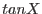
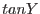
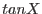
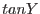

interface polarsToRaDec
subroutine polarsToRaDecVector(refRaDeg, refDecDeg, theta, phi, raDeg&
, decDeg)
real(double), intent(in) :: refRaDeg,&
refDecDeg,&
theta(:),&
phi(size(theta))
real(double), intent(out) :: raDeg(size(theta)),&
decDeg(size(theta))
end subroutine polarsToRaDecVector
end interface
! tanToRaDecScalar, tanToRaDecArray not yet done
The same as tanToRaDec (section  ), except the coordinates on the tangent plane are now given in polar coordinates
), except the coordinates on the tangent plane are now given in polar coordinates  and
and  instead of cartesian  and . The relationship between the two sets is as follows:
instead of cartesian  and . The relationship between the two sets is as follows: